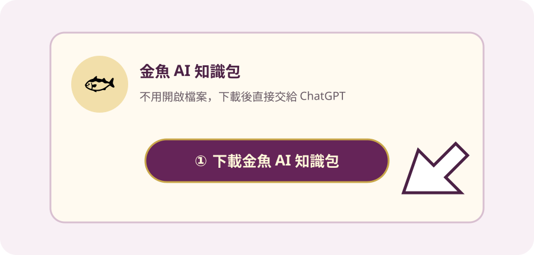
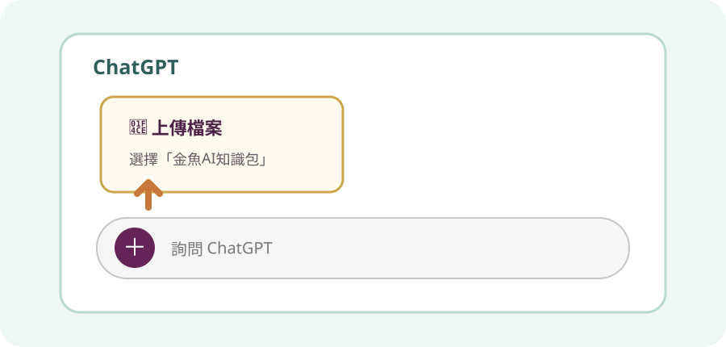
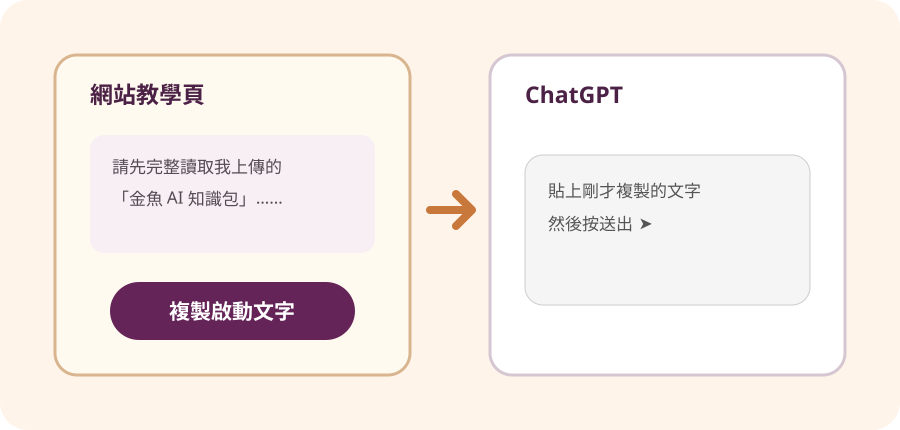
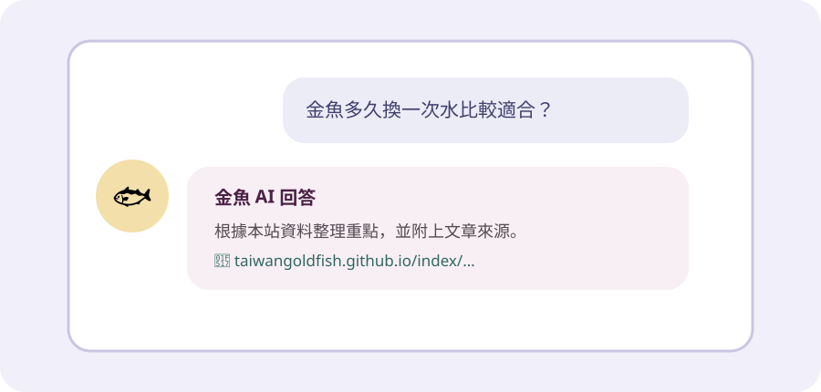

公益服務・免費使用
跟著圖片使用金魚 AI
不用懂電腦，也不用付費給本站。照著下面四個步驟，把本站整理的「金魚 AI 知識包」交給你自己的 ChatGPT，就可以開始提問。
請記得：回到同一個 ChatGPT 對話繼續問
如果另開新對話，需要重新上傳一次知識包並貼上啟動文字。
公益服務・免費使用
不用懂電腦，也不用付費給本站。照著下面四個步驟，把本站整理的「金魚 AI 知識包」交給你自己的 ChatGPT，就可以開始提問。
下載後不用打開檔案，只要記得它通常會放在手機或電腦的「下載」資料夾。
第一步

點上方紫色的「下載金魚 AI 知識包」。下載完成後，不用開啟、不用修改。
第二步

開啟 ChatGPT 後，按輸入框旁邊的「＋」或迴紋針，選擇「上傳檔案」，再選剛下載的「金魚AI知識包」。
第三步

請先完整讀取我上傳的「金魚AI知識包」。後續所有金魚飼養問題只能依照檔案內容，以臺灣繁體中文回答。資料不足時請直接說不知道，不可自行編造；每次回答最後請附上知識包內的本站文章名稱與完整網址。魚病問題不可武斷確診或直接指定藥物。
按「複製啟動文字」，回到 ChatGPT，在輸入框長按或按右鍵選擇「貼上」，然後送出。
第四步

等 ChatGPT 回覆「已讀取完成」後，就可以直接問：「金魚多久換一次水？」或「新魚怎麼檢疫？」
回答優先使用本站整理的金魚飼養內容。
提供文章名稱與網址，方便回到本站確認。
資料不足時不應自行編造答案。
嚴重魚病與高風險操作仍應尋求專業協助。